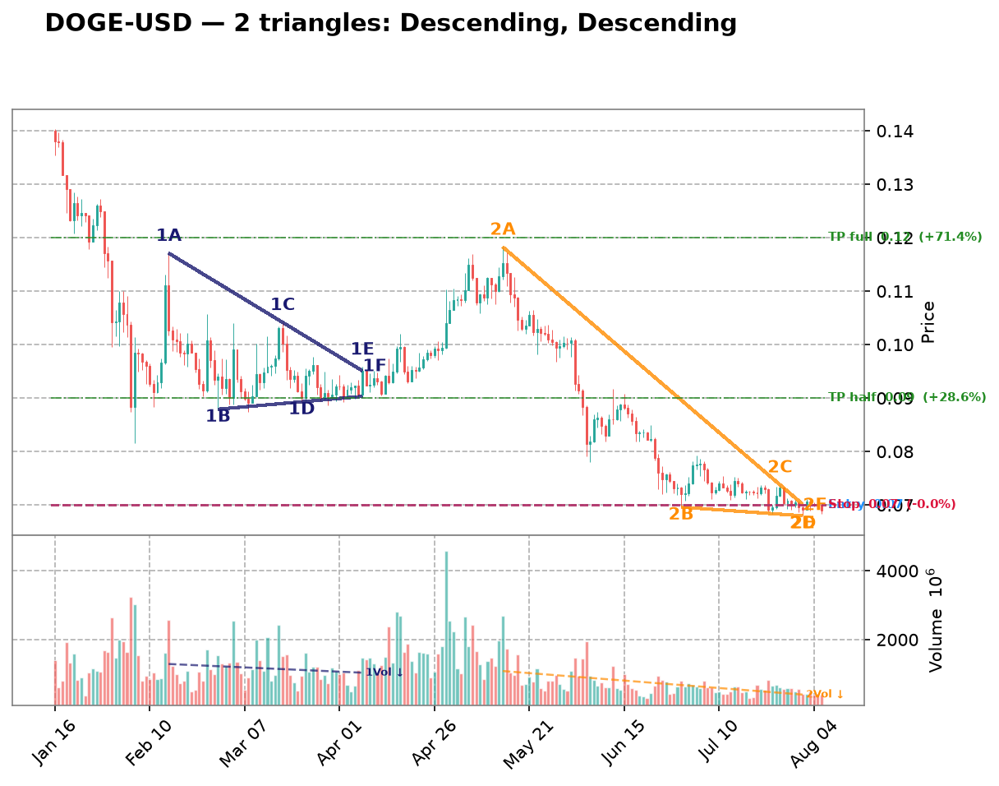
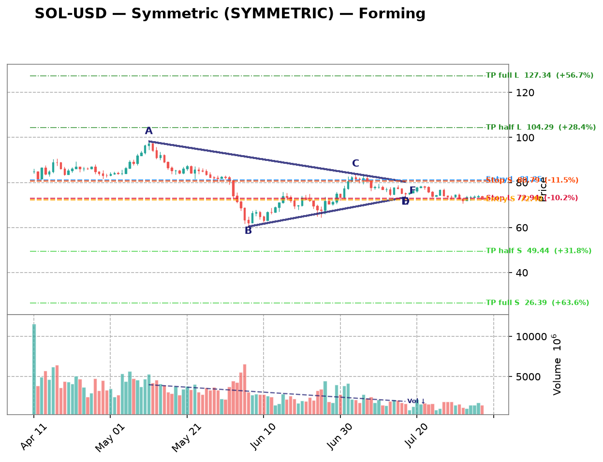

| Date | Symbol | TF | Pattern | Dir | Verdict | Claude Pattern | Claude Dir | Conf | Rec |
|---|---|---|---|---|---|---|---|---|---|
| crypto 10 patterns | |||||||||
| 2026-08-18 | DOGE-USD | 1d | Descending | LONG | Disputed | ? | ? | Certainty: 80 | — |
Chart  Claude Notes The right side of the chart (mid-June through August) shows price in a very tight, flat range around 0.068-0.075 with low volatility, but this looks more like a flat consolidation/basing pattern rather than a descending triangle. There's no clear series of lower highs converging into a flat support - instead both the highs and lows are roughly flat/horizontal at this point, forming a tight rectangle-like consolidation rather than a converging triangle. The actual descending structure occurred earlier (June price decline from ~0.09 to ~0.075), but that was a clean downtrend, not a triangle with a flat support base and lower highs. Since bottoming near 0.07, price has been chopping sideways with no clear diagonal resistance line making lower highs - highs and lows are both roughly flat with overlapping candles, which fails the criteria for a descending triangle (needs distinct lower-high trendline). I disagree with the algorithm's flag; this appears to be a flat consolidation, not a triangle breakout setup. Presence certainty 80/100 — how sure Claude is that its found/not-found call is correct | |||||||||
| 2026-08-18 | VET-USD | 1d | Descending | LONG | Disputed | ? | ? | Certainty: 78 | — |
Chart  Claude Notes Since late June, price has been consolidating in a tight, roughly flat range between about 0.0044 and 0.0050 with no clear convergence — highs and lows are both essentially flat, not narrowing into an apex. This looks more like a flat rectangular consolidation/base after a steep downtrend than a descending triangle, which requires a clearly descending upper trendline (lower highs) against a flat support. The recent candles show similar-sized wicks on both sides with no visible compression, so I disagree with the algorithm's descending triangle flag. If anything, the flat range with equal highs/lows could eventually resolve as a rectangle or ascending base, but currently there's insufficient narrowing to call it a valid triangle. Presence certainty 78/100 — how sure Claude is that its found/not-found call is correct | |||||||||
| 2026-08-18 | XRP-USD | 1d | Descending | LONG | Disputed | ? | ? | Certainty: 78 | — |
Chart  Claude Notes The right side of the chart (mid-June through Aug) shows price consolidating in a fairly flat, narrow range between ~1.0 and ~1.2, but there is no clear descending upper trendline with lower highs - highs are roughly flat/choppy rather than declining, and the lower support is also flat rather than rising. This looks more like a flat rectangular consolidation/basing pattern after a steep downtrend (Jan-Jun) than a converging triangle. There's no clear apex or convergence point forming - the range width stays fairly constant rather than narrowing. I disagree with the algorithm's descending triangle call because a descending triangle requires a clearly declining resistance line, which isn't visible here; the recent price action is closer to sideways chop with support around 1.0-1.05. Presence certainty 78/100 — how sure Claude is that its found/not-found call is correct | |||||||||
| 2026-08-18 | ETH-USD | 1d | Symmetric | SYMMETRIC | Disputed | ? | ? | Certainty: 75 | — |
Chart  Claude Notes The right-side price action from late June through July shows a recovery from ~1600 to a range around 1800-1950, followed by sideways consolidation with roughly flat highs (~1950) and flat lows (~1830). This looks more like a flat/rectangular consolidation or a slight uptrend into resistance rather than a converging symmetric triangle. There isn't a clear pattern of narrowing highs and rising lows converging toward an apex - the recent candles (mid-July onward) are trading in a tight horizontal band without strong convergence. The algorithm's symmetric triangle call seems to overfit noise in a sideways range rather than a genuine converging structure with clear diagonal trendlines on both sides. Presence certainty 75/100 — how sure Claude is that its found/not-found call is correct | |||||||||
| 2026-08-18 | SOL-USD | 1d | Symmetric | SYMMETRIC | Both detect, differ on type | Descending | SHORT | Quality: 45 | avoid |
Chart  Claude Notes From late June onward price shows a series of lower highs (~83, 78, 77, 74) while the lows cluster in a fairly flat band around 71-75, suggesting a descending-triangle shape rather than a symmetric one. The upper boundary is clearly sloping down while the lower boundary is nearly horizontal, so I'd classify this as descending rather than symmetric. Touch points are only moderate (2-3 per side) and the range is somewhat noisy/choppy rather than a clean compression, so confidence in the pattern being a high-quality tradable triangle is only moderate. Price is still inside the range near the right edge, not yet broken out, consistent with an unresolved compression pattern. Symbol Research Solana (SOL) is a high-throughput layer-1 blockchain used for DeFi, NFTs, and payments. It has seen renewed activity from meme-coin trading, ETF speculation, and network upgrades, but remains highly volatile and correlated with broader crypto risk sentiment (BTC/ETH moves). Market Sentiment neutral Presence certainty 58/100 — how sure Claude is that its found/not-found call is correct Pattern quality 45/100 — how clean/tradable this specific triangle is Research confidence 15/100 — Phase B research conviction Supporting Signals
Opposing Signals
| |||||||||
| 2026-08-18 | MANA-USD | 4h | Ascending | SHORT | Disputed | ? | ? | Certainty: 78 | — |
Chart  Claude Notes The right side of the chart (late July into early August) shows price drifting sideways-to-slightly-down in a tight range around 0.065-0.068, but there's no clear converging structure - highs and lows are roughly flat and parallel rather than converging toward an apex. This looks more like a flat consolidation/range or a slight descending drift than an ascending triangle. There's no evidence of rising higher-lows against a flat resistance line; if anything the resistance line is flat-to-declining and support is flat, which would resemble a rectangle or mild descending channel rather than an ascending triangle. I disagree with the algorithm's ascending triangle call - the lower boundary isn't clearly rising, and the touches don't show the characteristic higher-low staircase pattern needed for an ascending triangle. Presence certainty 78/100 — how sure Claude is that its found/not-found call is correct | |||||||||
| 2026-08-18 | SAND-USD | 4h | Descending | LONG | Disputed | ? | ? | Certainty: 75 | — |
Chart  Claude Notes Price shows an initial downtrend from ~0.048 to ~0.041, followed by a broad consolidation/range-bound period from Jul 28 to Aug 06 between roughly 0.040-0.044. There's no clear descending upper trendline with lower highs converging into a flat support - instead the highs and lows are fairly flat and choppy, resembling a rectangle/range rather than a converging triangle. The spike on Jul 30 (large wick and volume) disrupts any clean trendline structure. Near the right edge, price is drifting sideways-to-slightly-down without clear compression toward an apex. This looks more like consolidation/range than a textbook descending triangle. Presence certainty 75/100 — how sure Claude is that its found/not-found call is correct | |||||||||
| 2026-08-18 | XLM-USD | 3h | Descending | LONG | Disputed | ? | ? | Certainty: 88 | — |
Chart  Claude Notes The right side of the chart shows a persistent, steady downtrend from ~0.190 down to ~0.160 with lower highs and lower lows in a fairly consistent slope — this is a clean downtrend/channel, not a converging triangle. There is no rising support line with higher lows; lows are also declining in tandem with highs, so the lines are roughly parallel (a descending channel at best) rather than converging into an apex. The algorithm's 'Ascending triangle' label doesn't fit since there's no flat resistance or rising support visible near the right edge — price is making consistently lower highs and lower lows without compression. No credible triangle structure is forming near the right edge. Presence certainty 88/100 — how sure Claude is that its found/not-found call is correct | |||||||||
| 2026-08-18 | ETC-USD | 3h | Descending | LONG | Disputed | ? | ? | Certainty: 80 | — |
Chart  Claude Notes The chart shows a clear stepped downtrend with lower highs and lower lows throughout, not a converging triangle. Near the right edge, price is consolidating in a tight range around 6.4-6.65, but there's no clear rising support line - the lows are relatively flat/choppy rather than ascending, and the recent highs are also flat rather than descending in a converging manner. This looks more like a flag/consolidation after a downtrend rather than a descending triangle. The algorithm's flag doesn't hold up well - I don't see the falling upper resistance line with clean touch points, nor a flat support line with multiple respects. The price action on the right is mostly sideways chop at the bottom of the downtrend, lacking the classic converging structure needed for a triangle. Presence certainty 80/100 — how sure Claude is that its found/not-found call is correct | |||||||||
| 2026-08-18 | VET-USD | 3h | Ascending | SHORT | Disputed | ? | ? | Certainty: 75 | — |
Chart  Claude Notes The right side of the chart shows a choppy, range-bound consolidation with a slight downward drift (lower highs around 0.00478→0.00465→0.00465) but no clear rising support line - lows are roughly flat to slightly declining (0.00465→0.00460→0.00463), not higher lows as required for an ascending triangle. This looks more like a loose descending/flat channel or noise rather than a converging ascending triangle. There's no clear compression toward an apex - price is oscillating in a fairly wide band without narrowing. I disagree with the algorithm's ascending triangle call since the lower boundary isn't rising and the overall structure lacks the tightening wedge shape expected near the apex. Presence certainty 75/100 — how sure Claude is that its found/not-found call is correct | |||||||||
| crypto-equity 5 patterns | |||||||||
| 2026-08-18 | MSTR | 3h | Descending | LONG | Disputed | ? | ? | Certainty: 68 | — |
Chart  Claude Notes Price since early July has been oscillating in a fairly flat, choppy range roughly between 92-95 support and 98-103 resistance, without clear convergence. Highs (Jul 3, Jul 11, Jul 20, Jul 26) are not steadily declining in a consistent line, and lows (Jul 9, Jul 15, Aug 3) are not consistently rising either - both bounce around the same band. This looks more like a rectangle/range-bound consolidation than a converging descending triangle. There's no tightening of the range near the right edge - the last few candles (Aug 4-6) are still trading in the same 95-98 band as weeks prior, showing no apex compression. I disagree with the algorithmic flag; the structure lacks the progressive narrowing required for a valid descending triangle. Presence certainty 68/100 — how sure Claude is that its found/not-found call is correct | |||||||||
| 2026-08-09 | MSTR | 1h | Ascending | SHORT | Disputed | ? | ? | Certainty: 78 | — |
Chart  Claude Notes The right-side price action (late Aug 5 into Aug 6) shows a decline from ~99 to ~96.5 with lower highs and lower lows together — this looks like a mild downtrend/pullback rather than a converging triangle with a rising support line. There's no clear rising trendline of higher lows; instead both highs and lows are declining in tandem, more consistent with a small descending channel or simple retracement than an ascending triangle. No flat resistance line is visible either (highs are dropping from ~99 to ~97.5 to ~97). I don't see the two clearly converging trendlines required for a valid triangle at the right edge, so I disagree with the algorithm's ascending triangle / short flag. Presence certainty 78/100 — how sure Claude is that its found/not-found call is correct | |||||||||
| 2026-08-09 | CIFR | 1h | Descending | LONG | Disputed | ? | ? | Certainty: 78 | — |
Chart  Claude Notes The chart shows a series of large swing oscillations (roughly 26->18->24->17->26->18->25->18) rather than a converging structure. Each swing has similar amplitude, indicating a broad trading range/downtrend with volatility rather than a narrowing triangle. Near the right edge, price is declining from ~25 to ~18-19 with no flattening support line or clear lower highs converging into an apex - the recent candles show a steady downward slide, not compression. There is no consistent horizontal support with descending highs; the swings are too wide and repetitive to qualify as a descending triangle. I disagree with the algorithm's flag - this looks like continued range-bound/down-trending price action, not a triangle nearing apex. Presence certainty 78/100 — how sure Claude is that its found/not-found call is correct | |||||||||
| 2026-08-09 | MARA | 1h | Descending | LONG | Disputed | ? | ? | Certainty: 78 | — |
Chart  Claude Notes {
"found_triangle": false,
"pattern_type": null,
"direction": null,
"presence_confidence": 78,
"pattern_quality": null,
"notes": "The chart shows an overall downtrend with successive lower highs (15, 14, 13, 12.7, 12) and lower lows (12, 11.8, 10.7, 10, 10.7), forming a descending staircase rather than a converging triangle. There's no flat/horizontal support line - the lows are also declining, not holding at a consistent level. At the right edge, price is consolidating in a tight range around 10.7-12 but without clear evidence of a rising lower boundary or flat lower support meeting a descending upper trendline with 3+ touches each. This looks more like a broader downtrend with intermittent consolidation than a well-defined descending triangle. The algorithm's flag is plausible given the recent narrowing range, but the lower boundary isn't flat - it's still sloping down, making this more consistent with a bearish channel/flag than a classic descending triangle setup for a LONG bias, which would typically need a firm horizontal support.",
} Presence certainty 78/100 — how sure Claude is that its found/not-found call is correct | |||||||||
| 2026-08-09 | IREN | 1h | Symmetric | SYMMETRIC | Disputed | ? | ? | Certainty: 72 | — |
Chart  Claude Notes The chart shows a broad downtrend from late June (~57) into a choppy bottoming/ranging structure from mid-July through early August, oscillating between roughly 30 and 44 with multiple swing highs and lows of similar magnitude - more like a wide horizontal range than a converging wedge. Near the right edge (early August), price is bouncing between ~37-41 without clear narrowing of highs and lows; recent candles show similar range width to prior weeks rather than compression toward an apex. I don't see two clearly converging trendlines with consistent touch points - the swing highs (44, 43, 41) and lows (33, 30, 36) don't form a tight symmetric convergence, they look more like a rounded/ranging base. I disagree with the algorithmic flag; this looks more like consolidation/basing after a downtrend rather than a well-defined symmetric triangle. Presence certainty 72/100 — how sure Claude is that its found/not-found call is correct | |||||||||
| mega-cap 4 patterns | |||||||||
| 2026-08-18 | AMZN | 1d | Descending | LONG | Disputed | ? | ? | Certainty: 80 | — |
Chart  Claude Notes The right side of the chart shows a sharp rally from ~262 to ~287 followed by a pullback to ~272-274, not a compression pattern. There's no series of lower highs meeting a flat support line - instead there's a strong impulsive move up and a brief 2-3 candle retracement. This looks more like a breakout/pullback than a descending triangle. Earlier in the chart (May-June) there was a downtrend into a low around 228, but that also doesn't show a clean descending triangle structure - it's more of a broad decline followed by a base and rally. No clear flat support with lower highs converging is visible; the algorithm's flag appears to be a false positive based on the recent volatile price action rather than genuine triangle compression. Presence certainty 80/100 — how sure Claude is that its found/not-found call is correct | |||||||||
| 2026-08-18 | NVDA | 1d | Descending | LONG | Disputed | ? | ? | Certainty: 80 | — |
Chart  Claude Notes The right side of the chart shows a sharp V-shaped recovery from the ~190 low in late July, followed by a strong impulsive rally to ~220-224 with expanding range candles, not converging ones. There's no clear flat support or descending resistance line with multiple touches - price simply declined from ~210 to ~190 then rallied strongly. This looks like a rounded bottom/reversal followed by breakout, not a descending triangle compression. The algorithm likely misread the down-up swing structure as converging trendlines, but there aren't 2+ genuine touches on a flat support line - the lows vary (208, 190, 197) and the highs after the bounce are rising, not falling, which contradicts a descending triangle's lower-high requirement. Currently price is in a clear uptrend breakout, already past any consolidation. Presence certainty 80/100 — how sure Claude is that its found/not-found call is correct | |||||||||
| 2026-08-18 | META | 1d | Descending | LONG | Disputed | ? | ? | Certainty: 68 | — |
Chart  Claude Notes The right side shows a sharp drop to ~530 then a bounce to ~600, followed by choppy consolidation around 585-600 with no clear convergence of highs and lows. There isn't a well-defined flat support line or a consistently descending resistance line with multiple clean touches - price action looks more like range-bound noise after a volatile swing rather than a converging triangle. The algorithm's descending triangle call isn't well supported since the 'lower highs' aren't clearly stepping down in a straight line, and the base isn't flat enough with only 1-2 touches. I don't see a credible apex forming near the right edge. Presence certainty 68/100 — how sure Claude is that its found/not-found call is correct | |||||||||
| 2026-08-18 | GOOGL | 4h | Ascending | SHORT | Disputed | ? | ? | Certainty: 82 | — |
Chart  Claude Notes The right side of the chart shows a strong uptrend from ~320 to ~382, followed by a sharp reversal down to ~358, then consolidation. There's no clear ascending triangle structure - no flat resistance level being tested multiple times, nor a clean rising support line with multiple touches. Instead we see a strong rally, a sharp spike top near 382, and a pullback - this looks more like a blow-off top / reversal than a converging triangle. The algorithm likely mistook the steady uptrend candles as a rising support line, but there's no corresponding flat resistance line with multiple touches to complete a triangle. The recent price action (last 5-6 candles) shows a drop and sideways drift around 358-365, which doesn't show clear convergence between two trendlines. Presence certainty 82/100 — how sure Claude is that its found/not-found call is correct | |||||||||
| semiconductors 3 patterns | |||||||||
| 2026-08-18 | ADI | 4h | Descending | LONG | Disputed | ? | ? | Certainty: 72 | — |
Chart  Claude Notes The chart shows a clear downtrend from late June highs (~445) down to lows around 355 in early August, followed by a modest recovery/stabilization in the last ~8 candles around 375-385. There isn't a clean descending triangle structure - lower highs are present but there's no flat/horizontal support line being tested multiple times; instead lows kept dropping until the very last few bars where price flattened out. The recent price action near the right edge looks more like a small basing/consolidation attempt after a downtrend rather than a well-defined triangle with two converging trendlines and multiple touches on each side. I don't see at least 2-3 clear touches on both a rising/flat support and a falling resistance line converging toward an apex - the pattern is more of a downtrend into a shallow consolidation than a textbook descending triangle. Presence certainty 72/100 — how sure Claude is that its found/not-found call is correct | |||||||||
| 2026-08-09 | LRCX | 1h | Ascending | SHORT | Disputed | ? | ? | Certainty: 72 | — |
Chart  Claude Notes The right-side price action (early Aug) shows a choppy range between roughly 305-320, but there's no clear ascending support line—lows are flat/noisy (around 305-308) rather than making distinct higher lows, and the highs are also roughly flat (~315-320) rather than converging. This looks more like a horizontal consolidation/rectangle than a true ascending triangle. The algorithm likely flagged minor higher-low bumps, but there aren't 2-3 clean touch points forming a rising trendline distinct from a flat one. Prior to this, price action from mid-July was a clear downtrend with lower highs/lower lows, not a triangle. Given the ambiguity of the recent consolidation, I lean toward rejecting the triangle call, though a loose case for a shallow ascending structure isn't impossible. Presence certainty 72/100 — how sure Claude is that its found/not-found call is correct | |||||||||
| 2026-08-09 | AMAT | 1h | Symmetric | SYMMETRIC | Disputed | ? | ? | Certainty: 72 | — |
Chart  Claude Notes The right side of the chart shows a rally from ~500 to ~555 followed by a pullback to ~530, but this looks like a rounded top / pullback within a broader swing rather than a converging triangle. There's no clear sequence of lower highs meeting higher lows - the recent candles (Aug 03-08) show a peak around 555 then a fairly sharp drop to 530, which is more consistent with a short-term downtrend or consolidation than a symmetric wedge. I don't see at least two clean, roughly parallel converging trendlines with multiple touches on each side near the apex. The algorithm may be reacting to the general narrowing of range after the spike, but the touch points are too few and inconsistent to confirm a genuine symmetric triangle. Presence certainty 72/100 — how sure Claude is that its found/not-found call is correct | |||||||||
| forex 2 patterns | |||||||||
| 2026-08-09 | EURUSD=X | 1h | Ascending | SHORT | Disputed | ? | ? | Certainty: 82 | — |
Chart  Claude Notes The right side of the chart shows a clear downtrend from the Aug 5 peak (~1.156) into Aug 6, with lower highs and lower lows in a fairly consistent decline, followed by a flattening/consolidation near 1.1525-1.153. There's no clear rising support line with higher lows to form an ascending triangle - instead price dropped sharply and is now consolidating in a narrow range without a defined converging structure. The algorithm's ascending triangle call doesn't fit since there's no series of higher lows visible; the recent price action looks more like a sharp decline stabilizing at a new lower level rather than a triangle compression. Not enough touch points on both an upper and lower trendline to confirm any triangle pattern near the apex on the right edge. Presence certainty 82/100 — how sure Claude is that its found/not-found call is correct | |||||||||
| 2026-08-09 | NZDUSD=X | 1h | Ascending | SHORT | Disputed | ? | ? | Certainty: 78 | — |
Chart  Claude Notes The right side of the chart shows price consolidating in a choppy range between ~0.5865 and ~0.590 after a strong impulsive rally from late July. However, this looks more like a flat/rectangular consolidation than an ascending triangle - the highs are roughly flat (~0.590) but the lows are also fairly flat/choppy (~0.5865-0.587), not showing a clear rising sequence of higher lows. There's no clean converging trendline structure - both boundaries appear roughly horizontal rather than one flat and one rising. This resembles sideways consolidation or a minor pullback/flag after the breakout rather than a textbook ascending triangle with rising support. The algorithm's flag seems to be picking up on the tightening range but the specific 'rising lower trendline' criterion for ascending triangle isn't clearly satisfied here. Presence certainty 78/100 — how sure Claude is that its found/not-found call is correct | |||||||||
| hardware 2 patterns | |||||||||
| 2026-08-18 | DELL | 1d | Ascending | SHORT | Disputed | ? | ? | Certainty: 68 | — |
Chart  Claude Notes The right side of the chart shows a broad choppy trading range between ~370 and ~485 since early June, not a converging triangle. Highs and lows are oscillating (450->400->465->395->480->440) without a clear narrowing of range or consistent higher-low / flat-high structure. There's no well-defined flat resistance line nor a clean rising support trendline with multiple respected touches - swings are large and inconsistent, more like a wide consolidation/range than compression toward an apex. I disagree with the algorithm's ascending triangle call; the pattern looks more like sideways chop with no clear apex forming near the right edge. Presence certainty 68/100 — how sure Claude is that its found/not-found call is correct | |||||||||
| 2026-08-09 | STX | 1h | Descending | LONG | Disputed | ? | ? | Certainty: 72 | — |
Chart  Claude Notes The right-side price action (Aug 03–06) shows a choppy, roughly flat range between ~815 and ~890 with no clear convergence — highs and lows are similarly spaced throughout rather than narrowing toward an apex. There's a sharp downside wick near Aug 06 breaking below the recent range low (~780), which argues against a clean descending triangle setup (support was violated, not respected). I don't see a consistent flat support line with lower highs converging into it; instead it looks like sideways consolidation/noise with one outlier spike down. Not enough clean touch points on both a flat lower line and a descending upper line to call this a credible descending triangle. Presence certainty 72/100 — how sure Claude is that its found/not-found call is correct | |||||||||
| space 2 patterns | |||||||||
| 2026-08-18 | GSAT | 1d | Descending | LONG | Disputed | ? | ? | Certainty: 82 | — |
Chart  Claude Notes The chart shows a broad swing from ~80 up to ~84.5 (late May), a decline to ~79 (late July), and then a sharp gap-up breakout to ~84-85 in early August. There's no clear convergence of upper and lower trendlines near the right edge - instead there's a large gap-up candle with high volume followed by consolidation at the highs. This looks like a completed breakout/rally rather than a triangle still forming. No descending triangle structure (flat support + falling resistance) is visible; the price action right before the breakout was a downtrend into a low, then a sudden vertical move, not a gradual compression pattern with multiple touches on converging trendlines. Presence certainty 82/100 — how sure Claude is that its found/not-found call is correct | |||||||||
| 2026-08-18 | SPCE | 4h | Descending | LONG | Disputed | ? | ? | Certainty: 68 | — |
Chart  Claude Notes The chart shows a sharp decline from early June highs (~6.0) down to a bottom around 2.5-2.6 by mid-July, followed by a prolonged flat consolidation (Jul 8 - Aug 5) with price oscillating narrowly between ~2.5 and ~3.0. There isn't a clear descending upper trendline with lower highs converging into a rising support - instead price has been ranging sideways/slightly upward near the right edge, with a mild uptick in the last few candles (Aug 1-5) breaking above the recent range ~2.9-3.0. This looks more like a basing/bottoming range or a slight ascending drift rather than a descending triangle with compressing resistance. The algorithm's descending triangle call doesn't fit well since the highs in the recent consolidation aren't clearly declining - they look flat to slightly rising, and lows are also flat, more resembling a rectangle/range than a converging triangle. Insufficient clear convergence near the apex to confidently call this a descending triangle. Presence certainty 68/100 — how sure Claude is that its found/not-found call is correct | |||||||||
| adtech 1 pattern | |||||||||
| 2026-08-18 | U | 1d | Ascending | SHORT | Disputed | ? | ? | Certainty: 90 | — |
Chart  Claude Notes The chart shows a clear uptrend from late May through early August, culminating in a strong breakout with a large green candle and volume spike at the far right. There is no visible convergence between an upper resistance line and a rising support line - instead price is accelerating upward with expanding range, not compressing. The algorithm's ascending triangle flag doesn't hold up: there's no flat/horizontal resistance being tested multiple times, just a steady climb followed by a breakout candle. This looks like a strong continuation/breakout move, not a triangle consolidation. No credible containment pattern exists near the right edge. Presence certainty 90/100 — how sure Claude is that its found/not-found call is correct | |||||||||
| commodities 1 pattern | |||||||||
| 2026-08-18 | NEM | 4h | Descending | LONG | Disputed | ? | ? | Certainty: 80 | — |
Chart  Claude Notes The chart shows a clear V-shaped structure: a decline from mid-June highs (~112) down to a low around 90 by mid-July, followed by a steady uptrend into early August (currently ~105). There's no convergence of trendlines - the recent price action on the right side shows a rounded bottom and strong recovery rally with higher highs and higher lows, not compression between converging support/resistance lines. The algorithm's descending triangle call doesn't hold up: a descending triangle requires a flat support line with lower highs, but here we see the opposite - price is trending up with expanding range, not narrowing. This looks like a completed reversal/recovery pattern rather than a triangle continuation/consolidation setup. Presence certainty 80/100 — how sure Claude is that its found/not-found call is correct | |||||||||
| fintech 1 pattern | |||||||||
| 2026-08-18 | SOFI | 1d | Descending | LONG | Disputed | ? | ? | Certainty: 75 | — |
Chart  Claude Notes The right side of the chart shows a sharp selloff (gap down to ~15) followed by a strong V-shaped recovery to ~18.7 on heavy volume, then a slight pullback. This is an impulsive reversal move, not a converging consolidation. There's no clear flat support with lower highs converging - instead we see a single sharp low and rapid recovery with only 4-5 candles of price action afterward, insufficient to establish two respected trendlines with multiple touches. The algorithm likely misread the sharp bounce as the start of a descending triangle, but there's no repeated testing of a support level or series of lower highs compressing toward it. This looks more like a post-selloff recovery/consolidation than an established triangle pattern. Presence certainty 75/100 — how sure Claude is that its found/not-found call is correct | |||||||||
| industrials 1 pattern | |||||||||
| 2026-08-09 | RCL | 1h | Ascending | SHORT | Disputed | ? | ? | Certainty: 80 | — |
Chart  Claude Notes The right side of the chart shows price oscillating in a fairly flat range between ~318 and ~330 after a strong impulsive rally from late July. There's no clear rising lower support line - the recent lows (~320-322) are roughly flat or even slightly declining, not making higher lows as required for an ascending triangle. The highs are also roughly flat (~328-330) rather than converging with the lows. This looks more like a consolidation/range or minor pullback after a strong uptrend rather than a converging triangle. I don't see two clear trendlines converging toward an apex - the pattern lacks the compression structure needed. Disagreeing with the algorithm's ascending triangle flag; the structure is closer to a flat consolidation/rectangle than a triangle with rising support. Presence certainty 80/100 — how sure Claude is that its found/not-found call is correct | |||||||||
| internet 1 pattern | |||||||||
| 2026-08-18 | SNAP | 1d | Descending | LONG | Disputed | ? | ? | Certainty: 82 | — |
Chart  Claude Notes The chart shows a downtrend from late April into mid-June, followed by a basing/consolidation period around 4.3-5.0 through July, then a sharp breakout/gap up in early August with a large green volume spike, followed by pullback candles. There's no clear convergence of upper and lower trendlines - the July consolidation is more of a flat range/rectangle than a descending triangle, and the recent price action at the right edge shows an already-completed breakout (large gap up on high volume) rather than compression toward an apex. The algorithm's descending triangle flag doesn't hold up: highs in July are not making a clear series of lower highs converging with flat lows - it's a sideways range that already broke out upward before any triangle apex was reached. This looks more like a base-and-breakout pattern than a triangle still forming. Presence certainty 82/100 — how sure Claude is that its found/not-found call is correct | |||||||||